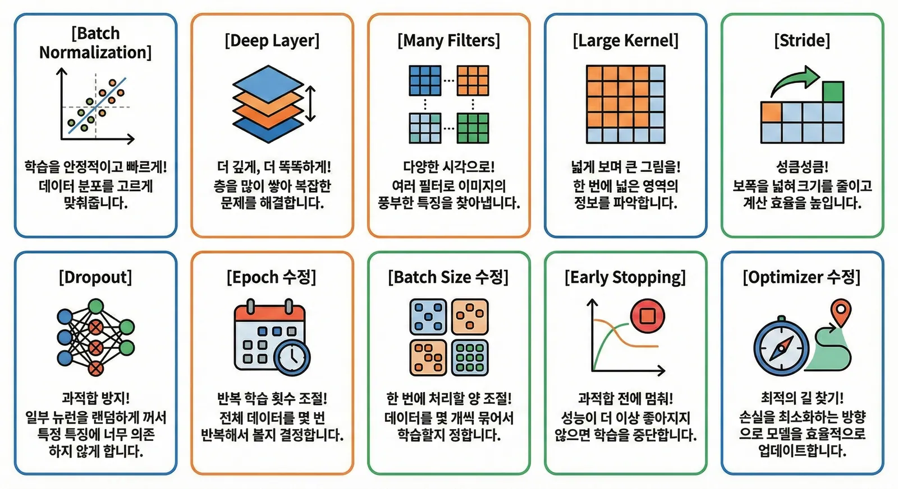

BatchNormalization
각 레이어에 들어가는 데이터 분포를 정규화해 학습 속도를 높이고 과정을 안정화합니다. 합성곱/Dense → 배치 정규화 → 활성화 함수 순서로 둡니다.
Part 3 · Hyperparameters
한 줄의 설정이 모델의 크기와 속도, 정확도를 얼마나 바꾸는지 같은 데이터로 비교합니다.
Experiment Map · S127
다른 조건을 최대한 유지하고 하이퍼파라미터 하나를 바꾸어 어떤 선택이 성능과 비용에 영향을 주는지 관찰합니다.

Structure · S128–131
각 레이어에 들어가는 데이터 분포를 정규화해 학습 속도를 높이고 과정을 안정화합니다. 합성곱/Dense → 배치 정규화 → 활성화 함수 순서로 둡니다.
특징 추출 층을 여러 단계로 깊게 쌓아 단순한 것부터 점점 복잡한 것을 이해하도록 가르칩니다.
32→64였던 필터 수를 64→128로 늘려 이미지 디테일을 놓치지 않도록 설계합니다.
필터 크기를 3×3에서 5×5로 키워 모델의 시야를 넓히고 한 번에 넓은 영역을 봅니다.
Training · S132–135
보폭을 1×1에서 2×2로 넓혀 특성맵 크기와 계산량을 줄입니다.
매 훈련 단계마다 설정 비율만큼 뉴런을 무작위로 비활성화해 특정 특징에 과도하게 의존하는 것을 막습니다. 일반적으로 Flatten 이후 Dense 뒤에 사용합니다.
가중치를 한 번 업데이트하기 위해 함께 학습하는 문제의 개수입니다. 커지면 학습 속도와 안정성이 향상될 수 있습니다.
딥러닝 모델이 정답을 찾아가도록 이끄는 길잡이입니다. 이 실험에서는 Adam과 AdamW를 비교합니다.
Interactive · Widget 07 · S136–139
탭에서 바뀐 줄만 확인하고, 표를 정렬하거나 산점도의 점을 선택해 가성비 좋은 모델을 찾으세요.
Four Conclusions · S136–139
Final Score 0.92650. 파라미터가 Baseline의 약 1/7 수준이며 추상적인 특징을 단계별로 추출하는 것이 중요했습니다.
파라미터는 약 1/16, 속도는 약 2배 빨라졌지만 성능은 거의 비슷해 모바일 탑재에 사랑받는 유형입니다.
파라미터는 약 2배이고 시간도 가장 오래 걸렸지만 Baseline보다 성적은 약 0.006만 올랐습니다.
학습률과의 부조화 같은 설정 미스로 낮은 성적이 나왔습니다. 보통은 BN을 사용하면 성능이 오릅니다.
Quick Check